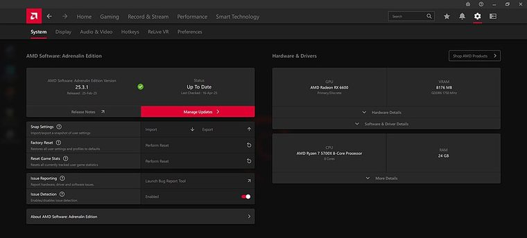

[ INDIVIDUAL CPU COMPONENT // ZEN 3 VERMEER DESKTOP ]
AMD Ryzen 7 5700X
Zen 3 Vermeer desktop; 8 cores / 16 threads, 3.4 GHz base / up to 4.6 GHz max boost, 32 MB L3 cache, 65 W default TDP. Check exact motherboard firmware and system configuration before installation.

MODEL IDENTIFICATION: This record describes AMD Ryzen 7 5700X. Confirm the full model name and package markings; adjacent Ryzen model numbers and suffixes can have different silicon, graphics, cache, power and compatibility.
Verified model specifications
| Cataloged part | AMD Ryzen 7 5700X |
|---|---|
| Architecture / family | Zen 3 Vermeer desktop |
| Core / thread count | 8 cores / 16 threads |
| Frequency | 3.4 GHz base / up to 4.6 GHz max boost |
| Cache | 4 MB L2 / 32 MB L3 |
| Default TDP | 65 W |
| Socket / memory | AM4 / Dual-channel DDR4 |
| Expansion / graphics | PCIe 4.0; No integrated graphics; discrete graphics card required. |
| Model distinction | Separate non-X3D Vermeer model; do not apply Ryzen 7 5700/5700G/5700X3D specifications interchangeably. Confirm the CPU support list and BIOS revision. |
Compatibility and service notes
- Requires an AM4 motherboard with a BIOS version listing Ryzen 7 5700X support. Use DDR4 and a discrete graphics card; the processor does not provide integrated display output.
- Separate non-X3D Vermeer model; do not apply Ryzen 7 5700/5700G/5700X3D specifications interchangeably. Confirm the CPU support list and BIOS revision.
- Package and heatsink dimensions are not represented by this schematic. Confirm the exact board socket, cooler retention/mount, system power delivery and thermal solution in their manuals.
- Record the motherboard model, BIOS/AGESA version, installed memory, cooler, and exact CPU OPN/markings when documenting a working build.
Sources & further reading
- AMD — AMD Ryzen 7 5700X product specificationsManufacturer model page; source for frequency, core/thread count, cache, socket, memory, graphics and default TDP.
- AMD — Processor specifications catalogManufacturer processor specifications index; select the exact full product name when checking model data.
- AMD — Support and documentationOfficial support resources; verify motherboard-level CPU compatibility and BIOS requirements with the motherboard vendor's CPU support list.
- Gamers Nexus — What the 5800X Should Have Been: AMD Ryzen 7 5700X CPU Review & BenchmarksIndependent video review; treat as supplementary context, not primary manufacturer documentation.
Published boost frequency is a maximum, not a guaranteed sustained all-core clock. Motherboard firmware, cooling, memory configuration and workload affect system behavior.